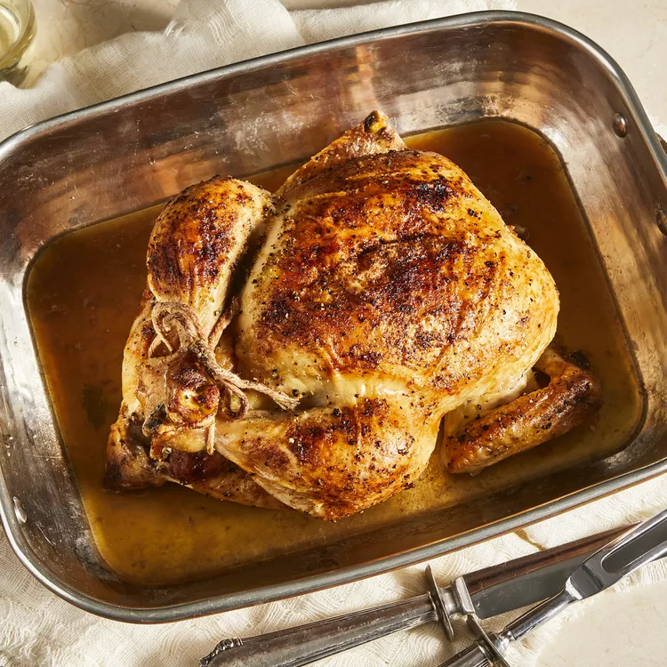

Juicy Roasted Chicken

This roasted chicken recipe is the way my grandmother used to make it. This method results in the juiciest chicken! We loved to nibble on the celery after it was cooked.
Ingredients
- Whole chicken
- Salt
- Pepper
- Onion Powder
- Butter
- Celery
Directions
- Season the chicken inside and out.
- Add the butter to the chicken and the pan.
- Stuff the cavity with celery.
- In an oven preheated to 350 degrees F, a 3-pound whole chicken should be completely cooked in a little more than an hour. You'll know it's done when the meat is no longer pink at the bone, the juices run clear, and an instant read thermometer inserted into the thickest part of the thigh (near the bone) reads 165 degrees F.